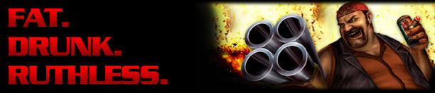

|
Fast. Furious. Filthy.
Gore - The Ultimate Soldier is an online multi-player game with a goal of providing classic hard core FPS action, blended with pure filth, humor and unique characters to give the player an experience that is fun and unique, but also without the stress and seriousness of many other styles of FPS games.
It's about ruining your opponents in mid air, leaving their stain on a 5th story window, followed by them spawning a second later to get revenge without ever questioning how a 500 lbs. man could gain 30 feet of air by jumping on a cloth window awning and hitting you in the face with 4 barreled shotgun while drinking a beer and smoking a cigar at the same time.
It's about having classic FPS fun with smooth net code and smooth performance without shelling out thousands of dollars in PC hardware just to try to keep your game running at a smooth enough frame rate during heavy firefights so that you don't lose because your wallet wasn't big enough to win a clan match.
It's game whose main features which are key to having fun being with easy controls which can be set up quickly and are easy to learn, allowing you to log in to a server and start rocking as soon as possible.
We have implemented many new things which we feel will have a positive impact on classic game modes plus other new and popular gaming styles. The Gore Production Team which is based on hard core gamers, not accountants, has striven to create a balance of realism, interactivity, technology and most importantly fun and frame rate, which are among the most important aspects in any PC video game.

System Requirements:
The minimum system requirements are low and allow people with medium range computers to run the game rock solid with high frames per second at reasonable settings so all members of your team and clan can always be certain to not die because of heavy video lag in large fire fights.
These low system requirements also enable players with higher end systems to take advantage of their advanced image quality settings for their video card and run the game with settings such as 8x Anti-Aliasing and 16x Anisotropic texture filtering for superb image quality while still maintaining great frame rates during heavy fighting.
The goal with this is to allow players of a wide variety of systems to play with similar screen settings and try to eliminate a poor aspect of many FPS games where the player with the best system specs will always have a huge upper hand.
The bottom line is it isn't fun to lose for stupid reasons such as your computer lagging because you want to run your game in the same settings as the other guys, but don't have $500 to spend on a new video card.
|